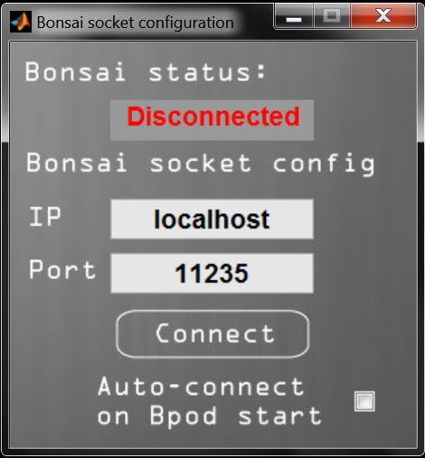

Using Bonsai
Bonsai is an open source software tool for processing data streams, developed by Goncalo Lopes. Among many applications in behavior measurement, it is most often used with Bpod for visual stimulus display, and for live video tracking, e.g. to trigger a Bpod state change based on the test subject's position in an arena.
Two methods exist to integrate Bpod with Bonsai, depending on your state machine model and firmware:
Via USB Serial Interface
Preferred method, requires State Machine r2.0 and newer with firmware v23
With Firmware v23 on Bpod State Machine 2.0 or newer, the machine creates two USB serial ports on the PC. The primary port (e.g. COM3) is used to communicate with MATLAB. The secondary "App" port (e.g. COM4) can be used by a third-party application to exchange events with the state machine. Bonsai can send bytes to the App serial port using the SerialWrite sink, found under 'IO.Ports' in the sink menu. Bonsai can receive bytes from the App serial port using the SerialRead source, under 'IO.Ports' in the source menu.
Note: From the Bpod console, click the Info (spyglass) icon to view the identity of the App serial port.
Bonsai --> Bpod State Machine
When bytes in range [0x1, 0x15] are sent from Bonsai's SerialWrite sink to the state machine's App serial port, the bytes are interpreted by the state machine as events App_SoftCode0 to App_SoftCode14. To handle these events, add them to the 'StateChangeConditions' section of a state. The following example state proceeds to the next state when byte 0x2 arrives from Bonsai:
sma = AddState(sma, 'Name', 'WaitForBonsai', ...
'Timer', 0,...
'StateChangeConditions', {'APP_SoftCode2', 'MyNextState'},...
'OutputActions', {});
Bpod State Machine --> Bonsai
Bytes in range 1-255 can be sent to Bonsai's SerialRead source from any state using:
ByteToSend = 3; % Send byte 0x3 to Bonsai
sma = AddState(sma, 'Name', 'SendToBonsai', ...
'Timer', 0,...
'StateChangeConditions', {'Tup', 'MyNextSTate'},...
'OutputActions', {'AppSoftCode', ByteToSend});
An example Bonsai program here uses the SerialRead and SerialWrite nodes to read incoming bytes from the state machine, and echo the same bytes back to the state machine generating Bpod events. Usage instructions are in the Readme file in the program folder.
Via TCP/IP on localhost
For State Machine r0.5 - r1.0 (any firmware), and r2.0 with firmware v22 or earlier
Since Bonsai is a separate program and MATLAB requires ownership of the Bpod state machine's only serial port, the soft codes must be passed via a local TCP socket. The Bonsai Socket Configurator manages this socket connection by creating a TCP server within MATLAB, and confirming when Bonsai is successfully attached as a client.
Notice: The current release should be regarded as an alpha. It works with example code as detailed below, but it is preliminary, and will be updated in a future revision with a more general solution for built-in TCP communication. Please report any bugs you encounter.
-
From the Bpod console, click "Settings" (the wrench icon)
-
Next, click "Setup Bonsai Socket Connection" (the tree icon)
-
You should now see the Bonsai socket configurator:

-
Since you are creating a TCP server, you can set a custom IP and Port if necessary. The defaults work for the examples below.
-
Click "Connect".
-
In Bonsai, run a workflow that connects to your IP and Port. An example Bonsai workflow is available in /Bpod_Gen2/Functions/Plugins/Bonsai/Bonsai Example TCP/. The example workflow requires Bonsai's "scripting" and "osc" packages. The example worflow sends SoftCode 5 to the Bpod state machine once per second.
-
Once the workflow is running, if the connection was initiated successfully, the Bonsai Status in Bpod should show "Connected" in green.
-
To demonstrate use of the workflow, after connecting to Bonsai, run the following soft code example: /Bpod_Gen2/Examples/State Machines/USB Soft Codes/SoftCodeTriggeredStateChange.m. The example reacts to Soft Code 5 by changing states. Send the state machine using SendStateMachine(sma), and then run it with RawEvents = RunStateMachine(). Within 1 second, Bonsai should trigger a state change, visible in the Bpod console's "Current State" field, and as a change in port LEDs if behavior ports 1 and 2 are connected. RunStateMachine returns events as event codes. The "magnifying glass" icon on the Bpod console contains the key. Your data should contain Soft Code 5 and its timestamp.